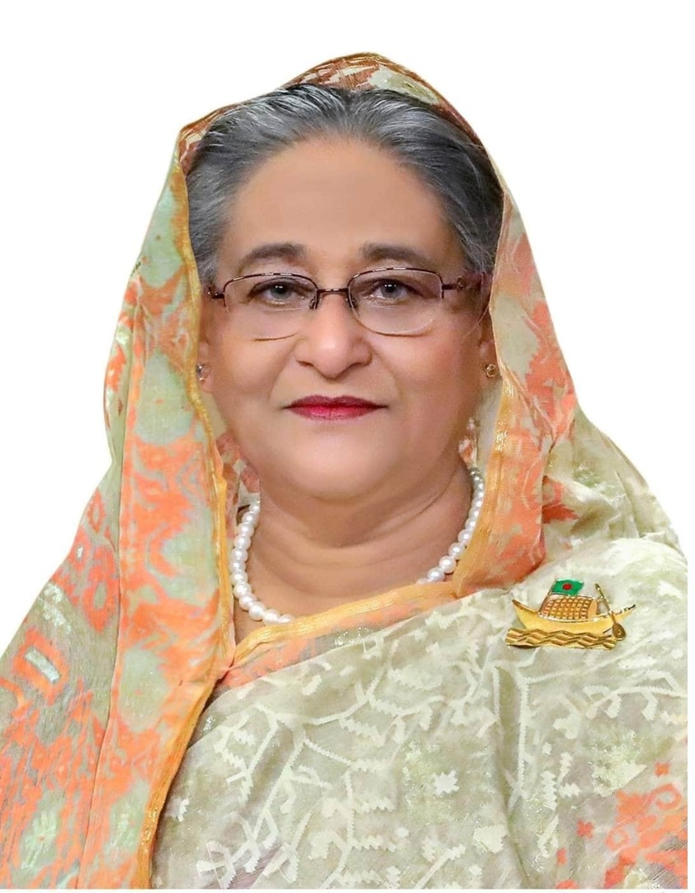

Killer Hasina
1947-2024
The Facist Prime Minister
Sheikh Hasina Wazed (born 28 September 1947) is a Bangladeshi politician who served as the tenth prime minister of Bangladesh from June 1996 to July 2001 and again from January 2009 to August 2024.[3][4] She is the daughter of Sheikh Mujibur Rahman, the founding father and first president of Bangladesh. Having served for a combined total of over 20 years, she is the longest serving prime minister in the history of Bangladesh. She was the world's longest-serving female head of government.[5] Her authoritarian regime ended in self-imposed exile following a series of violent protests in 2024.[b]
Biographies
- Crackdown on Political Opposition:Sheikh Hasina’s government has been criticized for suppressing political opponents, especially the Bangladesh Nationalist Party (BNP) and its leader Khaleda Zia. Reports claim that opposition leaders have been arrested and harassed, weakening political pluralism( Wikipedia )( Bookshop ).
- Freedom of Press:There have been concerns about media restrictions under Hasina’s rule, with journalists facing arrests and threats for criticizing the government. The Digital Security Act has been especially criticized for its role in curbing free speech and enabling government surveillance.
- Use of Security Forces:There have been multiple reports of extrajudicial killings, enforced disappearances, and police brutality under Sheikh Hasina's government, often involving opposition activists and critics.
- Election Controversies:The 2014 and 2018 general elections were marred by allegations of vote-rigging, voter suppression, and intimidation of opposition candidates. These incidents have raised questions about the fairness of the electoral process in Bangladesh.
- Limiting Civil Liberties:Some human rights organizations have accused the Hasina government of undermining civil liberties through laws and practices that suppress dissent and enable authoritarian control over public life.